Locații de nuntă în județul Mehedinți
- locații în director
- 21
- cu cazare în registrul SITUR
- 4
- medie ponderată Google
- 4,3 / 5
- evaluări Google
- 14.265
Cum alegi unde mergi la vizionare
Eșelnița, Ilovița și Ponoarele sunt nume de urmărit când comparați proprietăți din afara orașului. Dacă priveliștea vă aduce la vizionare, verificați-o și de la nivelul meselor. Un loc frumos pentru portrete poate avea un traseu diferit de cel potrivit pentru toți invitații.
Hotel Restaurant Elite din Drobeta-Turnu Severin oferă un exemplu de eveniment în grădină. Dacă îl comparați cu o pensiune din Eșelnița, notați în ce loc s-ar aduna familia înainte de cină. Într-un caz poate conta mai mult accesul din oraș, în celălalt apropierea camerelor. Cereți același plan al meselor pentru grupul vostru la ambele adrese.
Două adrese pentru o zi de vizionări
Pe hartă, între aceste două proprietăți sunt 4,2 km în linie dreaptă. Deschide indicațiile de drum din fișe ca să vezi traseul pe șosea înainte de a stabili a doua întâlnire.
- Melin Residence by Apolodor · Zona Faleza, Melin Residence by Apolodor, Bulevardul 1 Decembrie 1918, 225200 Orșova
- Resort SPA Clisura Dunării · DN57 98, 227195 Eșelnița
Spații exterioare menționate de operatori
- Hotel Restaurant Elite · Evenimente în aer liber în grădină
Explorează după localitate
Toate locațiile din județul Mehedinți
Ordinea ține cont de nota Google și de numărul evaluărilor. Cum calculăm ordinea
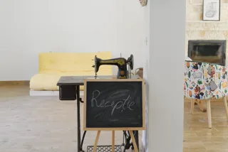
Fotografie a locației · Sursa fotografiei Balotești · Pensiune de familie
Pensiunea Happy
Un grup aflat pe Via Transilvanica s-a oprit la Pensiunea Happy pentru prânz și își amintește masa servită în grădină.
strada DC7, comuna 72, 227296 Baloteşti+40 752 634 650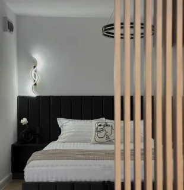
Fotografie a locației · Sursa fotografiei Drobeta-Turnu Severin · Hotel
Grey Residence
Grey Residence. Dacă intenționați să legați cazarea de o întâlnire în grădină, cereți o confirmare scrisă care să le enumere pe amândouă.
Bulevardul Aluniș 44, 220118 Drobeta-Turnu Severin+40 721 323 698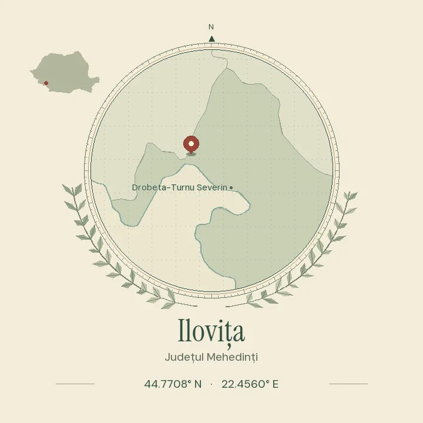
Hartă ilustrată Ilovița · Cazare la gazdă
Conacul Fruntea cu Ceru
Conacul Fruntea cu Ceru, Ilovița. Terasa despre care vorbește un oaspete de la Fruntea cu Ceru aparținea apartamentului în care a fost cazat.
QFC4+8C, Ilovița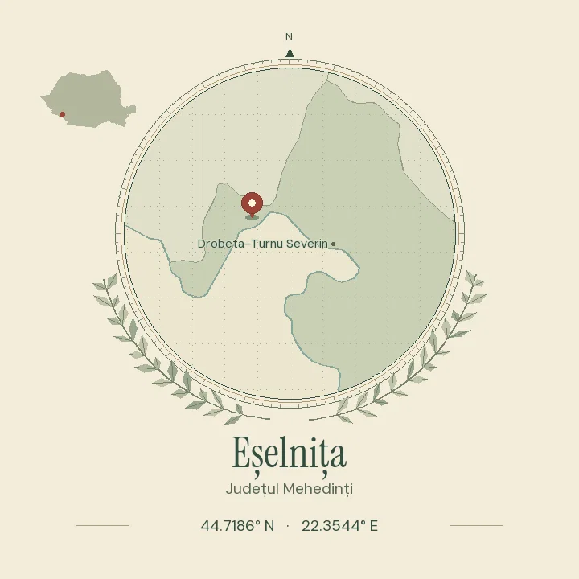
Hartă ilustrată Eșelnița · Local pentru evenimente
Conacul din Clisură
Conac cu sală de evenimente în Eșelnița, Mehedinți: loc lăudat, dar recenzii recente critice despre ospătari și parcare. Ce să ceri în contract.
227195 Eșelnița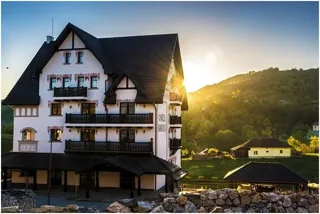
Fotografie a locației · Sursa fotografiei Ponoarele · Restaurant
Conacu' Boierului
Conac în Ponoarele unde un cuplu și-a făcut nunta în 2026; camere decorate pe regiuni, 1.740 de evaluări, dar recenzii mixte despre mâncare.
nr. 9, 227360 Ponoarele+40 740 057 390
Fotografie a locației · Sursa fotografiei Eșelnița · Bed & Breakfast
Pensiunea MAI DANUBE
Pensiunea MAI DANUBE, Eșelnița. Pentru MAI DANUBE, zona Clisurii Dunării este unul dintre motivele invocate de oaspeți pentru ședere.
STR. DUNARII, NR.936, 225200 Eșelnița+40 722 991 178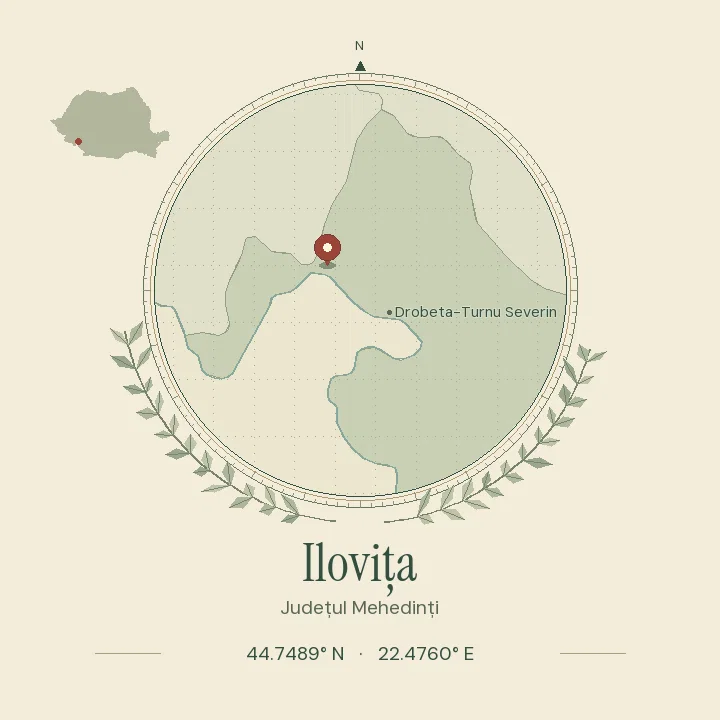
Hartă ilustrată Ilovița · Hotel
Conacul Grecului
Pensiune de familie în Ilovița, Mehedinți, cu curte mare, foișor și mâncare gătită de gazde. Date puține despre evenimente; ce să întrebi.
Strada Principala nr 507, 227280 Ilovița+40 727 174 690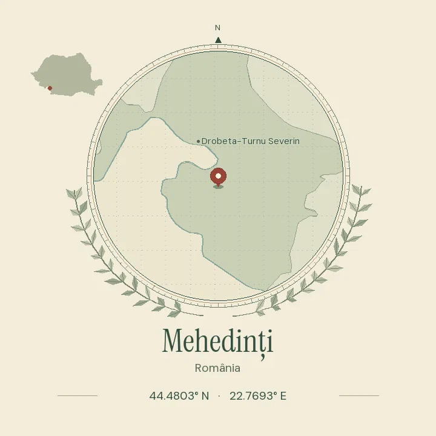
Hartă ilustrată Zona Rogova · Cramă
Crama Stârmina
Cramă în Mehedinți, cu vie și vinuri de colecție, nota 4,9 din 16 evaluări. Nu are evenimente documentate; ce să întrebați pentru o degustare.
Unnamed Road+40 723 990 455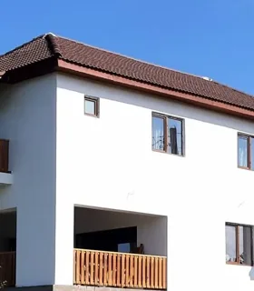
Fotografie a locației · Sursa fotografiei Sfodea · Bed & Breakfast
Pensiunea Casuta de la Munte Sfodea
Pensiunea Casuta de la Munte Sfodea, Sfodea. Pentru prietenii care iubesc mersul pe jos, acesta poate fi un motiv să mai rămână o zi.
Strada Principala nr. 1, 227037 Sfodea+40 754 432 520
Fotografie a locației · Sursa fotografiei Eșelnița · Bed & Breakfast
Casa Ana Serena
Pensiune cu ponton și piscină pe malul Dunării, la Eșelnița: curte plină de flori, nota 4,6, dar scări abrupte de verificat pentru vârstnici.
Strada Dunării 1068 B, 227195 Eșelnița+40 765 574 534
Fotografie a locației · Sursa fotografiei Eșelnița · Piscină interioară
Resort SPA Clisura Dunării
Resort SPA Clisura Dunării, Eșelnița. O familie cu doi copii își amintește mai ales atenția proprietarilor la Clisura Dunării.
DN57 98, 227195 Eșelnița+40 726 159 312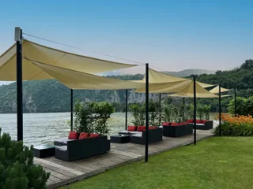
Fotografie a locației · Sursa fotografiei Zona Eșelnița · Bed & Breakfast
Pensiunea Septembrie
Pensiunea Septembrie, Mehedinți. Icrele și aperitivul cu pește sunt recomandările unui vizitator care a oprit la Septembrie pentru prânz.
DN57 - Dunării 1198D, 227195+40 726 135 065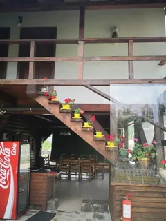
Fotografie a locației · Sursa fotografiei Eșelnița · Pensiune
Pensiunea Alegria
Pensiunea Alegria, comuna Eselnita jud. Mehedinti. La Alegria din Eșelnița, pontonul este detaliul care schimbă discuția despre o ceremonie.
str. Dunarii nr 964, 227195 comuna Eselnita jud. Mehedinti+40 747 935 122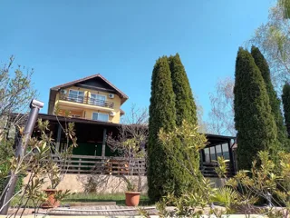
Fotografie a locației · Sursa fotografiei Eșelnița · Pensiune
Pensiunea Doina
Pensiunea Doina, Eșelnița. Dacă una rămâne deschisă clienților obișnuiți, schimbă din timp traseul dintre ceremonie și aperitiv.
DN57 952, 227195 Eșelnița+40 722 506 476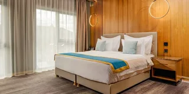
Fotografie a locației · Sursa fotografiei Drobeta-Turnu Severin · Hotel
Hotel Restaurant Elite
Hotel Restaurant Elite. Un client care venea la Elite pentru exerciții de recuperare menționează piscina interioară, apa caldă și dușurile.
Strada Cicero 219, 220086 Drobeta-Turnu Severin+40 352 418 518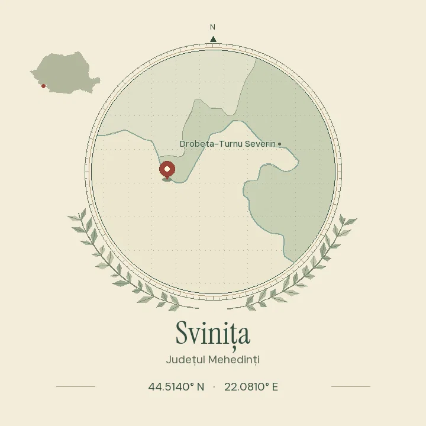
Hartă ilustrată Svinița · Cazare
Conacul Sârbesc
Conacul Sârbesc, Sviniţa. Pentru o masă cu specific sârbesc în familie, porniți discuția de la preparatul pe care vreți să îl împărțiți.
Svinita 44°30'51.1"N 22°04'53.1"E 44.514180, 22.081420, DN57, 227440 Sviniţa+40 722 660 508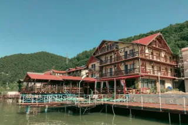
Fotografie a locației · Sursa fotografiei Eșelnița · Bed & Breakfast
Pensiunea Steaua Dunarii Eselnita
Pensiunea Steaua Dunarii Eselnita, Eșelnița. Dacă aveți rude în ambele clădiri, cereți un tabel cu camerele și adresele de prezentare la sosire.
Strada Dunării, 227195 Eșelnița+40 722 207 918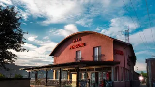
Fotografie a locației · Sursa fotografiei Orșova · Bed & Breakfast
Pensiunea Țaka
Pensiunea Țaka. La Țaka în Orșova, un vizitator remarcă apropierea de ambarcațiuni, magazine și baruri, alături de priveliștea spre Dunăre.
E70, 225200 Orșova+40 772 121 842Fotografie a locației · Sursa fotografiei Drobeta-Turnu Severin · Hotel
Hotel Continental Drobeta-Turnu Severin
Hotel cu salon de la 250 de locuri în Drobeta-Turnu Severin. Recenziile disting camerele renovate de cele vechi; ce să ceri pentru invitați.
Bulevardul Carol I 2, 220111 Drobeta-Turnu Severin+40 372 528 828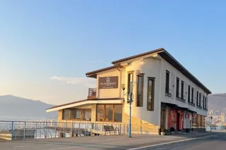
Fotografie a locației · Sursa fotografiei Orșova · Restaurant
Melin Residence by Apolodor
Melin Residence by Apolodor, Orșova. Un grup care a comandat șalău în Orșova descrie o neînțelegere privind cantitatea facturată.
Zona Faleza, Melin Residence by Apolodor, Bulevardul 1 Decembrie 1918, 225200 Orșova+40 746 122 040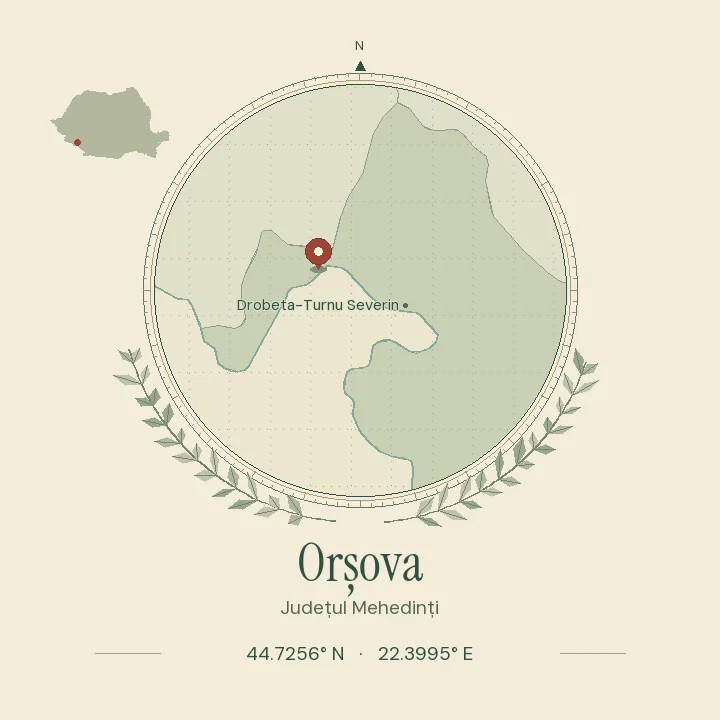
Hartă ilustrată Orșova · Pensiune
Pensiunea Oliver
Pensiunea Oliver, Orșova. Detaliul contează dacă rezervați la Orșova și vreți să vedeți lacul chiar din camera în care vă pregătiți.
Bulevardul 1 Decembrie 1918 16B, 225200 Orșova+40 726 382 246
Întrebări despre locațiile din județul Mehedinți
Unde pot dormi invitații în județul Mehedinți?
În registrul de cazare SITUR găsim Pensiunea MAI DANUBE (30 de locuri de cazare), Conacul Sârbesc (8 locuri de cazare), Pensiunea Steaua Dunarii Eselnita (28 de locuri de cazare). Verifică ce camere sunt libere pentru noaptea evenimentului.
Ce spații sunt documentate pentru evenimente în aer liber în județul Mehedinți?
Hotel Restaurant Elite — Evenimente în aer liber în grădină.
Care locație din județul Mehedinți are cele mai multe evaluări Google?
Hotel Continental Drobeta-Turnu Severin are 2.559 de evaluări în profilul Google folosit la documentare. Evaluările acoperă și alte experiențe la proprietate, inclusiv vizitele fără eveniment.
Unde apare o intrare accesibilă în județul Mehedinți?
Profilurile Google indică o intrare accesibilă la Conacul din Clisură, Crama Stârmina, Resort SPA Clisura Dunării. Pentru o cununie în exterior, cere detalii despre traseul dintre intrare și zona cu scaune.